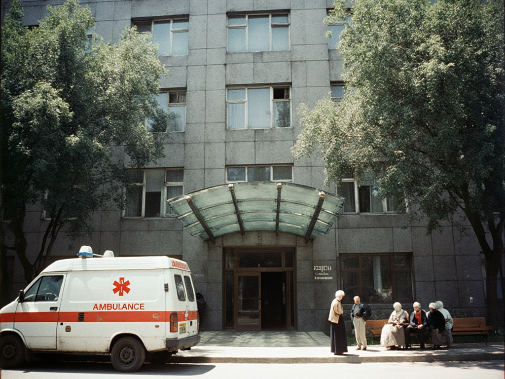
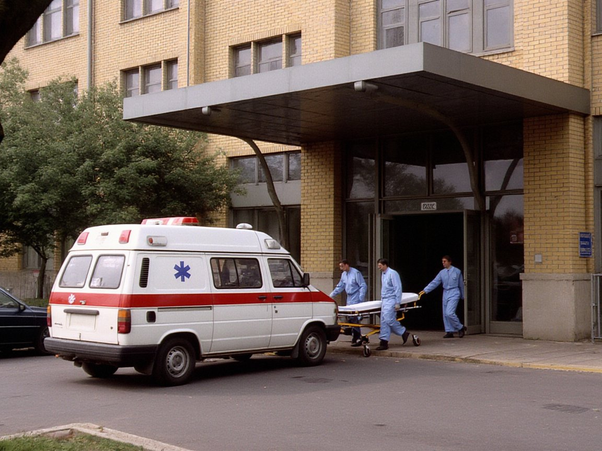

Home » Hospitals and polyclinics » Talas Municipal Hospital No. 1
Talas Municipal Hospital No. 1
Talas shaardık No. 1 oorukanası
| Type | Hospital |
|---|---|
| Address | 2 Doctors' Street, Talas |
| Telephone | +996-39-2-24-03-03 |
| Beds | 480 |
| Founded | 1964 |
| Run by | Talas City Hall |


"City Hospital No. 1", the main general emergency hospital of Talas, run by the city government. It takes most of the ambulance admissions of the city, trauma cases and general surgery, internal medicine and intensive care. Patients needing specialist treatment are transferred to the Regional Hospital.
The emergency department, with operating theatres, a resuscitation room and a covered ambulance entrance, was rebuilt and opened on 1 December 2004.
Visiting hours: daily 16:00-19:00.